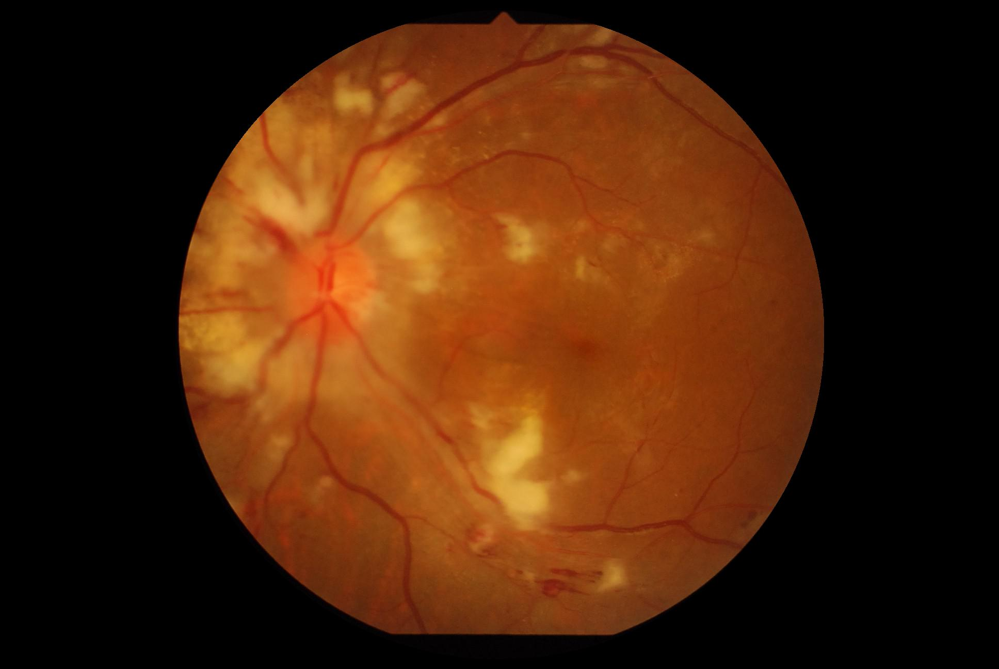

Description
This site provide an Ocular Disease Intelligent Recognition (ODIR) based on model trained from this dataset. It is not trained to recognize human faces/ direct photo of eyes. For best result, upload images of color fundus photograph of eye. The model we use to train this site is available at Github.
Status
Model Output
